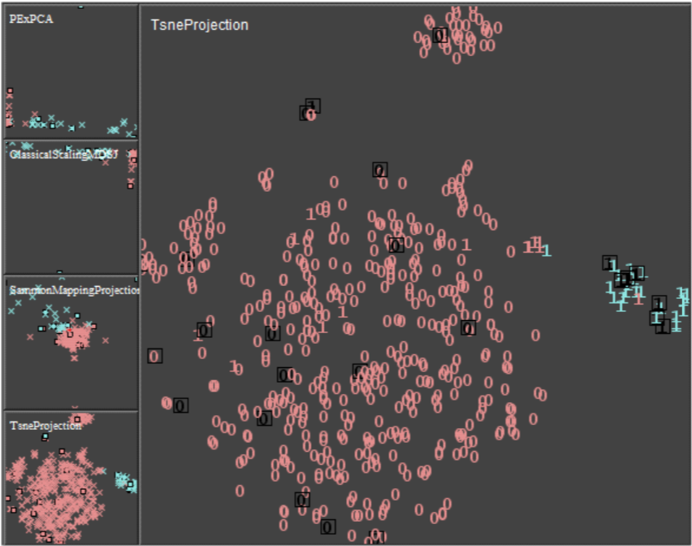

Learning from the Best – Visual Analysis of a Quasi-Optimal Data Labeling Strategy

Authors. Jürgen Bernard, Marco Hutter, Markus Lehmann, Martin Müller, Matthias Zeppelzauer, Michael Sedlmair
Venue. EuroVis (2018) Short Paper
Type. Short Paper
Abstract. An overarching goal of active learning strategies is to reduce the human effort when labeling datasets and training machine learning methods. In this work, we focus on the analysis of a (theoretical) quasi-optimal, ground-truth-based strategy for labeling instances, which we refer to as the upper limit of performance (ULoP). Our long-term goal is to improve existing active learning strategies and to narrow the gap between current strategies and the outstanding performance of ULoP. In an observational study conducted on five datasets, we leverage visualization methods to better understand how and why ULoP selects instances. Results show that the strategy of ULoP is not constant (as in most state-of-the-art active learning strategies) but changes within the labeling process. We identify three phases that are common to most observed labeling processes, partitioning the labeling process into (1) a Discovery Phase, (2) a Consolidation Phase, and (3) a Fine Tuning Phase.